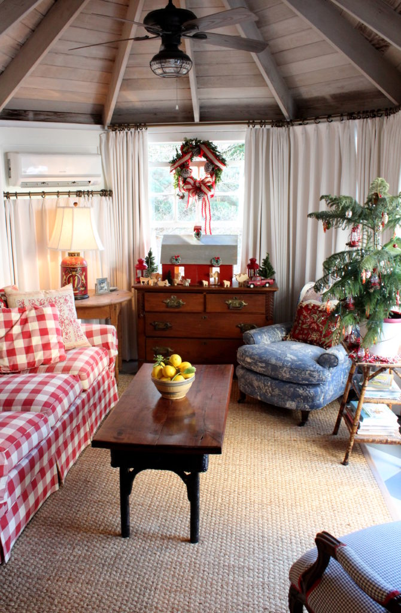

.png)
.PNG)
.PNG)
.PNG)
.PNG)
.PNG)
.JPG)
.JPG)
.PNG)
.PNG)


Welcome back for part 2 of our tour of Tom and Kathy Trocheck’s (aka Mary Kay Andrews) home all dressed up for Christmas! Today we are going to tour the living areas of their house. When I left you at the end of part 1, we were in the breakfast room off the newly remodeled kitchen. If you go in a different direction right off the kitchen, you will find this charming sunroom:

Originally, this room with its octagonal vaulted ceiling was an unheated space, but the Trochecks added a small wall unit making the room usable year-round. Tom created the coffee table from two other tables that neighbors had discarded, and isn’t that little tree there on the bamboo table just precious?! 🙂
Kathy has an office upstairs, but she says that this room is her favorite place to work on her novels. The wooden barn nativity was purchased at yet another estate sale…this one in Savannah.
 And of course I loved that sofa upholstered in a red buffalo check. 🙂
And of course I loved that sofa upholstered in a red buffalo check. 🙂

Now if you will go back through the kitchen and breakfast room, you will see this porch through the windows there. This room was just recently screened in. (I think that is a necessity if you live in Georgia.) Tom built the console table there by the brick wall, and the seating is Restoration Hardware pieces that were found at an estate sale. I believe Kathy had them reupholstered in Sunbrella fabric.
 Because the house is named Squirrel Hollow, the tree on the porch is decorated with..squirrels! They came from Antiques and Beyond in Atlanta, but they are new – not antiques. 🙂 The drapes were made from panels found in Ballards Back Room (also in Atlanta.)
Because the house is named Squirrel Hollow, the tree on the porch is decorated with..squirrels! They came from Antiques and Beyond in Atlanta, but they are new – not antiques. 🙂 The drapes were made from panels found in Ballards Back Room (also in Atlanta.)
 Another of Kathy’s collections – vintage picnic and lunch tins and thermoses, works beautifully around the base of the tree.
Another of Kathy’s collections – vintage picnic and lunch tins and thermoses, works beautifully around the base of the tree.
 Now let’s wander into the big living room that is located on the other side of the entryway we saw in part 1 of our tour. Kathy made the stockings that are hanging on the mantel from vintage blankets and a sweater. (She was supposed to be working on one of her novels with an approaching deadline and had writer’s block…so she decided to do some creative sewing instead! The alternate activity helped her to get over the mental block. 🙂 )
Now let’s wander into the big living room that is located on the other side of the entryway we saw in part 1 of our tour. Kathy made the stockings that are hanging on the mantel from vintage blankets and a sweater. (She was supposed to be working on one of her novels with an approaching deadline and had writer’s block…so she decided to do some creative sewing instead! The alternate activity helped her to get over the mental block. 🙂 )
The mantel sports more of her blue and white collection. This time the ginger jars are holding dried hydrangeas from her yard mixed with some magnolia and evergreen branches.
 The large tree in the living room displays her collection of Shiny Brite ornaments on its branches, and vintage department store boxes are around the base.
The large tree in the living room displays her collection of Shiny Brite ornaments on its branches, and vintage department store boxes are around the base.
 The living room was actually added to the house in the 1950’s by the original owners. It was used as a rec room back then and had a pool table in it.
The living room was actually added to the house in the 1950’s by the original owners. It was used as a rec room back then and had a pool table in it.
These estate sale chairs were covered in white cotton duck, and that wicker table between them was one of my favorite pieces in the house.
 Kathy had assistance from designers Clay Snider and Kevin Hotelling in getting the house ready for the Christmas tour. Magnolia and Fraser fir branches helped to dress up the simple, but beautiful white nativity.
Kathy had assistance from designers Clay Snider and Kevin Hotelling in getting the house ready for the Christmas tour. Magnolia and Fraser fir branches helped to dress up the simple, but beautiful white nativity.
 The banjo guys on the sofas provided music during the tour. Each of the 6 tour homes had delightful musicians- ranging from someone playing the bagpipes to an ensemble of violinists from the Dekalb School of Arts.
The banjo guys on the sofas provided music during the tour. Each of the 6 tour homes had delightful musicians- ranging from someone playing the bagpipes to an ensemble of violinists from the Dekalb School of Arts.
 Tom built the coffee table that is in front of the sofa from a regular height kitchen table. He also built the bookshelves in the room and used recycled pine for the countertops. (Engineer husbands can be quite handy; can’t they?! 🙂 )
Tom built the coffee table that is in front of the sofa from a regular height kitchen table. He also built the bookshelves in the room and used recycled pine for the countertops. (Engineer husbands can be quite handy; can’t they?! 🙂 )
 You have now seen all the rooms with living spaces downstairs, (there will be a bedroom to see downstairs in part 3) so let’s go upstairs to see a couple more rooms. This area with the long window seat is part of Tom’s office. Tom and their son, Andy, are both avid fishermen. Somehow I missed photographing the fly-fishing area of this space. Hopefully, Rhoda will have that in her photos on Friday.
You have now seen all the rooms with living spaces downstairs, (there will be a bedroom to see downstairs in part 3) so let’s go upstairs to see a couple more rooms. This area with the long window seat is part of Tom’s office. Tom and their son, Andy, are both avid fishermen. Somehow I missed photographing the fly-fishing area of this space. Hopefully, Rhoda will have that in her photos on Friday.
 One of the things that really drew the Trochecks to this home was all the built-in bookshelves. These are right beyond Tom’s office space.
One of the things that really drew the Trochecks to this home was all the built-in bookshelves. These are right beyond Tom’s office space.
 Across from those shelves were even more shelves for their library of books. MKA has published 24 novels, and she reads a lot, so bookshelves were a necessity.
Across from those shelves were even more shelves for their library of books. MKA has published 24 novels, and she reads a lot, so bookshelves were a necessity.

And our last stop for today is Kathy’s office. The shelves in that room hold framed book jackets from all of her novels plus NY Times bestseller lists. She said that there are times when she feels like she just can’t go any further with her writing, and these framed items give her the motivation needed to keep moving forward…the “Yes, I can do this” she needs to pick herself up and get back on track.

More books…
 Cute Christmas tree “built” from her novels by daughter, Katie and her friend Catherine.
Cute Christmas tree “built” from her novels by daughter, Katie and her friend Catherine.
 And finally, this white sofa is another estate sale find… as is the beautiful blue quilt on the back of it.
And finally, this white sofa is another estate sale find… as is the beautiful blue quilt on the back of it.
 And that, dear friends, is where I am leaving you today. Just wait here for part 3. 🙂 In our final part of the tour, we will see the bedrooms and baths in the house.
And that, dear friends, is where I am leaving you today. Just wait here for part 3. 🙂 In our final part of the tour, we will see the bedrooms and baths in the house.
Just a reminder of the giveaway going on this week…but I made a big goof! There is one more book I meant to include in the giveaway. (Sooo much going on in December!) It is this new little Christmas novella from Barbara Hinske.

You are going to just love it as I did! It is a super sweet story set in the 1950’s that pulls together the lives of a number of strangers when one of the characters loses her Christmas money as she comes out of her bank. The kindness of strangers throughout the novella will certainly give you a warm feeling and fill you with the Christmas spirit. 🙂

So… I have edited the post from part 1 to include it, and you can see more details about the giveaway there. Just remember, to enter simply leave a comment on any post (on the website – not an email reply to it) that publishes between 12/12/16 and 11:59 p.m. on Sunday, 12/18/16. You may leave a comment on all the posts that publish in that time frame for more chances to win, but please leave only one comment per post. I will do a random drawing after the close of the contest and announce the winner in the next post that publishes after that date.
I enjoyed reading about all your MANY collections in the last post! What an amazing assortment between all of you! Today I will leave you with this totally random Christmas question so that you have an easy time entering for the giveaway. 🙂
What is your favorite Christmas movie?
(We saw Believe in the theaters a couple of weeks ago and enjoyed it.)
Looking forward to again hearing from you!
Until next time…


.PNG)
My very favorite Christmas movie is White Christmas! Thanks for another beautiful photo tour, Kelly
This tour just gets better and better! Wish I could have gone on the tour! I am getting some great decorating ideas.
I get a lot of enjoyment from your blog, Kelly. Thank you for sharing!
My have two favorite Christmas movies – The Bishop’s Wife and The Shop Around the Corner. Oldies but goodies!
I just absolutely adore your home – and Kathy’s too! I thought I’d finished my Christmas decorating, but after touring both homes through your posts, I need to add more red!
My favorite movie is A Christmas Carol. Hubby and I watch the different versions every year, starring Reginald Owen, Alastair Sim, and George C. Scott: “I will honor Christmas in my heart and try to keep it all the year.”
Love the stockings that Kathy made that are hung by the chimney with care!
My favorite Christmas movie of all time is Christmas in Connecticut with Barbara Stanwyck. Merry Christmas to you and your family!
Once again, loved seeing this beautiful home. Thanks for posting.
My favorite Xmas movie is Home Alone. Love the antics. Merry Christmas!
The sunroom is perfect! What a lovely place to read and relax (and of course, write!). Christmas in Connecticut is a vintage Christmas movie, with Barbara Stanwyck — a sweet story about a writer pretending to be a perfect homemaker who gets found out when . . . well, it’s a fun movie 😉
“Home Alone” is one of my favorites.
Polar Express is my favorite Christmas movie.
I love all of it!
Such a beautiful home!! Favorite Christmas movie? Well…there’s It’s a Wonderful Life, Elf, the Santa Claus movies (3), White Christmas, Holiday, and so many more! I guess I love them all! 😉
Just can’t get enough of your posts. Love them. Really enjoy seeing the Southern design-magnolia leaves, screened porches. We can dream of warm weather up here in Wisconsin.
Such a real, down to earth home. Thanks for letting us ‘walk through’ with y’all. We watch a gambit of Christmas movies, but I think that one of my favorites would be White Christmas. I just love it!
I too love the barn nativity and squirrel tree. My favorite Christmas movie is The Family Stone, it reminds me of my own big family. Really enjoying the house tours!
Awesome!!! What a wonderful house. I have rad all her books and loved them. White Christmas might be my favorite.
I love the Polar Express movie! The stockings are wonderful. Her house is cozy looking, very inviting!
Love her home and love her books! Her warmth shines thru in both home and books.
I love the buffalo check couch! I am really enjoying the home tour. Thank you for sharing!
Love, love, love the sunrooms octagonal vaulted ceiling!
It was so much fun to take a tour of Mary Kay Andrews house! I love her books. My favorite Christmas movie is It’s a Wonderful LIfe.
I have read all of Kathy’s books so it was a delight to tour her lovely home! Enjoy reading your posts! Happy Holidays!
I love the book Christmas tree our public library has a huge one…so clever. White Christmas is a favorite in my family.
Loved these rooms! Thanks for sharing!! Merry Christmas!!
Your holiday decorations remind me when I was about 5 years old riding my 3 wheel bicycle in the living room. My mom and I would go to the country and pick princess pine and she would make a wreath for our front door. Lots of love and memories at Christmas time in the 1950’s
I love red, and I loved this tour. Thanks!
I Love Miracle on 34 th Street!
Industrious men, your husband and Kathy’s. My husband is a retired teacher, and yes, he built two bookcases for our children when they were young . My favorite Christmas movie stars Bing Crosby in Whitr Christmas. I can recall watching it with my grandmother several years in a row when I was young.
A Charlie Brown Christmas – absolutely not Christmas without it.
And… Die Hard – it’s a Christmas movie right? 🙂
Oh what an enchanting home! Thank you for sharing. I never fail to tear up at It’s A Wonderful Life. But truly am a fan of most holiday movies.
Great post Kelly …I’m struggling to think of a favourite festive film as I tend to like all films with a Christmas theme and snow! If I had to pick one it would probably be White Christmas as I have such fond memories of watching it with my mum, snuggled up in front of the fire, when I was a child.
Hope your Christmas preparations are going well.
Rosemary
Another great post! I LoVe that ‘book’ Christmas tree in Kathy’s office! 🙂 I have two favorite Christmas movies–It’s a Wonderful Life and White Christmas. My family also pulls out the ‘Best Of’ Andy Williams’s Christmas Specials DVD to watch each year…it’s a tradition! 🙂
Love the porches in her home.
My favorite Christmas movie is It’s a Wonderful Life.
Loved the 2nd Christmas Home tour. My all time favorite holiday movie is Holiday with Cameron Diaz. I love checking out the home decore of the cottage so warm and cozy. Such a great moving, one I never tire of. Merry Christmas
I so enjoy your blog. The photos are beautiful. Thank you for sharing Mary Kay’s house. What a treat. So many beautiful things!
I can’t let a Christmas season go by without watching “Love Actually”. It makes me laugh and cry and who can’t be cheered up by watching Hugh Grant dancing like no one is watching?!🌲😊
I pick Miracle on 34th Street. I am so loving your Christmas posts! Handy husbands and fathers are the best!!!
As always, Kelly, you make me wish I was right there beside you. Your descriptions and photos are the next best thing! Thank you for sharing.
Such a beautiful home and I love reading Mary Kay Andrew novels. Merry Christmas Kelly. Peggy
Love her books and have read many of them. What a warm and inviting home she has. Thanks so much for sharing.
Hi Kelly, my favorite movie is one of the old versions of “A Christmas Carol”. Thanks for the giveaway! Love the tour, thanks for sharing, wish I could have gone.
What a wonderful giveaway. Her home looks so inviting.
Oh my! I have a Coke cooler and a green metal picnic box just like Mary Kay’s! My grandmother’s husband kept the fish he caught in the cooler. My granddaughters store their play dishes in the picnic box. My favorite vintage film is The Bishop’s Wife. The bishop’s study with the carved wood paneling is stunning. The old fashioned tree with tinsel is charming. Of course, the skating scene is a classic. My favorite newer movie is The Holiday. I have a passion for Nancy Meyer’s sets.
I love that little octagonal room! That is such a beautiful home!
This home tour is a great inspiration to use what you love and make your home your own. One of my favorite Christmas movies is Elf. So many good feels in it!
Another must read!!! Currently Savannah Breeze is calling my name on my nightstand.
I’m loving the tour of Mary Kay Andrew’s home since I had a previous commitment and couldn’t tour that day. I would love to have seen it since it’s a beautiful place.
My favorite movie is “It’s a Wonderful Life” and I wanted to see Believe but never made it to the theater.
I love all Christmas movies on the Hallmatk channel! But my very favorite is Christmas Vacation! It’s sooooooo funny!
Thank you for the tour of this delightful home . It seems every photo has an idea I would like to copy . My favorite Christmas movie is It’s a Wonderful Life , I watch it every Christmas Eve with my hubby .
White Christmas is my all time favorite Christmas movie!
Thanks Kelly! Love the book Xmas tree~still like your house & decorations more. Blessings, Julia
The most recent “Miracle on 34th Street” and the first “Home Alone” are my favorite Christmas movies. So happy there was a Part 2 and soon there will be a Part 3 to Kathy’s house! I love how livable yet pretty the house is. I love that with all her success she lives in a comfortable house. She and her husband are so talented! How nice to have husbands who are handy… mine is too, but he has never tried his hand at furniture making.
Oh yea, I also like “The Holiday”! Merry Christmas Kelly!!
Love this tour and would love to have these books!
Loved the tour. Thank you! My favorite Christmas movies are all the old classics, think Rudolf, Frosty, etc. Newer favs are some of the Hallmark movies.
Enjoying the tour! So much to see. Hard to choose, but I love It’s a Wonderful Life for a favorite Christmas movie.
Thanks for part 2, can’t wait for part 3. Her home is beautiful!
My favorite Christmas movie is “Miracle on 34th Street”.
If I had to pick one favorite Christmas movie it would be The Polar Express! But I love all of the old classics and of course I’m glued to the Hallmark channels this time of year. I’d love to know your very favorite Christmas movie too!
Thank you for letting us travel to places with you that we otherwise would miss seeing! I like “White Christmas,” but I also like all the Hallmark movies. The plots are predictable, but they have happy endings and allow you to escape into wonderful world’s of nostalgia and fantasy.
Favorite Christmas movie! Meet me in St. Louise and Christmas in Connecticut. I just love the entry scene in Christmas in Connecticut when they drive in on the sleigh, and that house! I loved the house!
It is amazing that she allowed strangers in this beautiful home! I love her already! Thank you for sharing, waiting on part 3!
Love part two of the home tour. Favorite Christmas movie? I always enjoy It’s a Wonderful Life, but the original How the Grinch Stole Christmas is my favorite! 🎄
What beautiful Christmas decorations! Loved part 2 of this tour.
What a beautiful home! Loved part 2 of this tour.
I enjoyed the 2nd part of the tour. Love the Christmas stockings she made!!
I have a red checked sofa also. Love it!
So creative! Beautiful!!!!
Love both your house and hers!
Okay, I love that sunroom! My eye went right to the coffee table (and sofa!) and I could tell it was “made” before reading the comment about it. I LOVE that piece, because it’s a one of a kind.
I will say that these rooms were a bit easier to look at, not as crammed full. I just can’t handle that much stuff anymore! I’m sure it makes MKA happy, and that’s all that matters! I still love her writing! 😉 Am waiting to see what else there is at her house! And the squirrel tree – adorable!
Looking forward to part 3 What a great home Loved the tree made from her books and the blue paint is so pretty .The metal picnic baskets are great and love it as a tree skirt Gives us a lot of ideas for Christmas decorating Thanks for sharing
linda m
Loved seeing your continuing house tour! White Christmas will always be my favorite Christmas movie, but I love them all! 🎄
How charming. I love everything–especially all the plaid and all the built-ins. And what a terrific office! Thanks for sharing!
I love the Christmas movie’The Bishop’s Wife’ . I have really enjoyed seeing this home. It is so welcoming and I also love red to be used at Christmas.
WHite Christmas is a long-time favorite. My now adult daughters can still quote lines and sing all the lyrics. Watching this movIe was a big part of our girl times each year.
I too have a collection of picnic tins, so I really enjoyed seeing how she has incorported them into her Christmas decor. Christmas is my most favorite time of the year and I always kick off my decorating after Thanksgiving watching “White Christmas”!
My favorite movie, hands down -White Christmas! I’m not familiar with the author of the book you forgot. 😉 I’ll be looking her up. THANKS for another wonderful post.
I love all the old movies with snow in them. Christmas in Connecticut, White Christmas, etc. I am owning and aching at all the wonderful rooms and decorations. Thanks again for sharing.
I also want to thank you for posting about your trip to WA. I so enjoyed all the places you visited and plan some trips next summer.
My favorite Christmas movie is A Wonderful Life. My favorite part of today’s tour is the barn nativity.
That’s it, I’m converted. I am now a Buffalo check fabric lover. Curtains here I come!
I”m enjoying these Christmas posts! The Christmas book tree was charming. I’m sharing it with every teacher I know. I also love the many bookcases. I’m now thinking of putting some along my living room walls. You’ve convinced as to the charm they add to a room. As for my favorite Christmas movie- it has to be “Christmas in Connecticut”, with Barbara Stanwyck, Dennis Morgan, and S.Z. Sakall. It brings back memories of snowy New England Christmases!
Thanks for another great post. What a beautiful home! I saw a really cute (nearly favorite) Christmas movie this year called ‘Eloise at Christmas’. Julie Andrews is in it. It was a very sweet movie with Eloise causing all sorts of mischief at the Plaza Hotel. It ends with Eloise helping a young couple find true love.
Thanks for sharing this tour. Favorite movie is a wonderful life
Loved the vaulted ceiling and the husbands homemade pieces! Wow lot’s of lovely things to see. Favorite movie~White Christmas. But I do appreciate Hallmark for running Christmas movies all month in December. Once again Merry Christmas! Jill 🙂
Reading your posts and looking at photos makes my desire to move south even more! Since it’s a blustery 21 degrees and a windchill making it feel as though it’s 6 today in Michigans Great Southwest!
Merry Christmas!
Love the Christmas tree made from her novels!
Love the barn nativity and the squirrel tree!! My favorite funny Christmas movie is “Christmas with the Kranks”!
MKA’s house is fabulous! Thanks for sharing it! My favorite Christmas movie is “A Christmas Story”- with the red rider gun, and fishnet hose lampshade. Makes me laugh and yearn for simpler times!
My favorite Christmas movie has to be Elf! I enjoy the soundtrack and my family listens to it every year and watch the movie as a tradition. A little corny but light hearted – great stress relief. I must comment on the barn nativity – I just love it and have never seen one like it. What a great find. Thanks again Kelly for the chance to win your giveaway.
All the little touches make this home so special. Thanks for sharing.
I so enjoyed the continuation of this tour….. many warm and inviting spaces and things to see! It’s hard to pick a favorite Christmas movie, but I do love, “It’s a Beautiful Life” and have had fun watching “Elf” with my children and grandchildren.
My favorite Christmas movie is The Bishop’s Wife.
My all-time favorite Christmas movies?? I have two: It’s a Wonderful Life and White Christmas. Somehow I am not officially in the Christmas spirit until I’ve watched them…more than once!
My favorite Christmas movie is “Elf”. Just the “fun factor” makes me want to watch it every single year.
Now about the home tour. Ohmygosh. Such classic elegance BUT so perfect for actually “living”. She is truly the queen of estate sales! Wow! Thanks for such a great tour and all the extra tidbits you included!
LL
I’m with you Kelly.. I loved the buffalo checked sofa and red to boot!! White Christmas is my favorite movie but love so many more! The house is beautiful but yours is still my favorite!
Thank you for sharing your tour. The house is so much fun…love it.
I love the Christmas tree built from books — so creative! Also wonder that you didn’t load up that red buffalo check sofa and bring it home! 🙂
Loved the red check sofa!! Favorite Christmas movie is It’s a Wonderful Life!
Love the blanket/sweater stockings! Favorite movie this time of year is “It’s a Wonderful Life”!
Miracle on 34th Street has to be my favorite Christmas movie. I so enjoy your posts. Merry Christmas, Kelly!
You made me laugh in your first post when you said Kathy calls her Christmas style “Ralph Lauren trapped in a 1950’s Woolworth’s department store.” That sounds so like the Mary Kay Andrews I know. Her house is so wonderful and it was a real treat to see it. Thank you Kelly and Merry Christmas to you and your family.
I just love all of Mary Kay’s different ideas of collectible furnishings put together!!
hmmmm favorite Christmas movies are: The Christmas Carol, The Polar Express(with my son), Miracle on 34th Street, Charlie Browns Christmas(with my son), The Holiday & Serendipity are 2 of my favs 🙂
Thanks for sharing the tour, and hope I finally win a wonderful package 🙂
Kelly,
I loved the red check sofa and blue toile chairs combo. Her house is so welcoming. Thanks for sharing.
xo,
Karen
I have one movie we taped when VHS was popular and I cannot remember the name of it but Jaqueline Smith was the mom and they were stationed in Alaska because her husband was working for a company looking for oil and her son did not want them to drill in this one area because it would ruin the North Pole, does anyone remember this? I have not seen it on TV and who has a VHS player anymore. So, I love to watch all the Hallmark movies this time of year even if they end pretty much the same…I am a sap.
Our oldest daughter started the tradition a few years back of watching all the Die Hard movies because I think the first one was at Christmas time, so we at least watch that one.
I love MKA’s nativity with the barn…that is so up my alley. I also like how she made a Christmas tree with all of her books. I really am going to have make time and start reading her books, everyone loves her and mentions what great reads they are. I know…I know…shame on me.
Any Hallmark Christmas movie!
I am loving this tour…. so enjoy “Mary Kay Andrews” novels !!! That porch was AMAZING thank you for sharing Kelly!!
Her home is so warm and cozy! I love the coffee tables her husband built too. Rudolph, the Red Nosed Reindeer is still my favorite Christmas movie.
My absolute favorite Christmas movie is, hands down, The Bishops Wife with David Niven, Cary Grant and Loretta Young. Probably most of your readers have not seen it. It is an old classic and perfectly delightful.
Kelly, love your blog, especially when you bake cakes! (From Nelle Shelton’s recipes!)Mary Kay’s homes are perfect. So inviting and interesting.
Favorite movie, hands down, The Holiday. Who wouldn’t love Christmas in a quaint English village, and to hear an adorable little girl say, “you look just like Barbie”!!Jude Law was so sweet with those little sweethearts!
Merry Christmas to you, dear blog friend!
Enjoying this tour soo very much! Just love everything! So much to look at and think about — I really don’t have a favorite Christmas movie but I do love the Real Christmas Story– and there are many that depict the Nativity. I also enjoy the Polar Express movie and read the story to my first graders each year and Santa always came to enjoy hot coco and gifted each child with a silver bell. Sweet Memories!💕🌲🙏⛄️️💕
My favorite Christmas movie is It’s a Wonderful Life!
What a cozy, warm, inviting home. The pictures made me smile. I think it would be great to visit their home and joy the warmth and all the charm they incorporated finding fabulous items through estate sales. I’m fired up for some estate sales now. Thanks for sharing the open house with us.
How so very beautiful and how appropriate is that book tree!! Merry Christmas to you and your family Kelly!
Kelly,
I just love Kathy’s sunroom! It looks so inviting. My favorite Christmas movie is A Christmas Story with a close second place being A Christmas Carol. Thanks for sharing! I can’t wait see more of Kathy’s lovely home.
Dawn
These posts are delightful. I love getting an email that there is a new post. It means dropping everything and devouring it.
I love how she has mixed blue in with the traditional red and green for Christmas. Beautiful!
I love her screened in porch area. Love the tree and vintage collectibles around it. My favorite is the book tree though!! How fitting. Their home is very cozy, homey and livable. 🙂 Favorite movie, hands down “A Christmas Carol” with George C. Scott!! 😀